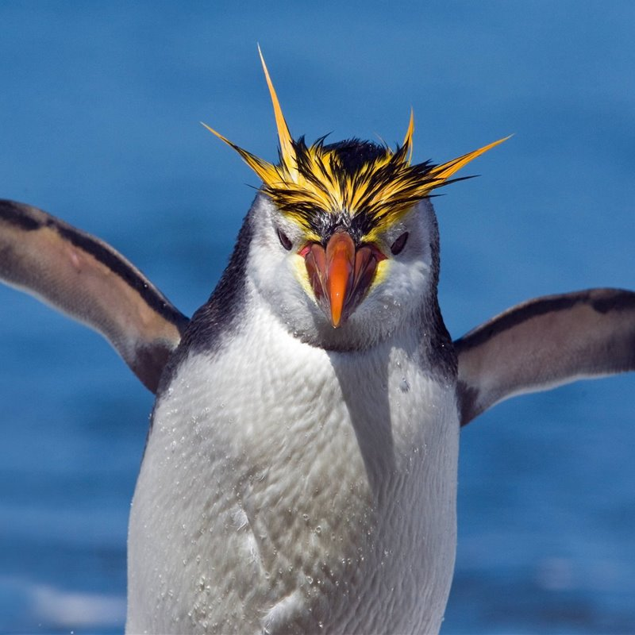

PINGUINO
Los pingüinos son aquellas aves que se engloban dentro de la familia Spheniscidae y a su vez dentro del orden de los Sphenisciformes.

Se trata de un grupo de aves marinas no voladoras, en el que se pueden diferenciar hasta 18 especies diferentes las cuales que se distribuyen -exceptuando el pingüino de las islas Galápagos- exclusivamente en el Hemisferio Sur.

A pesar de que no pueden volar, son grandes nadadores, por ello sus aletas se han adaptado al medio acuático, donde pueden llegar a alcanzar los 50 km/h. La cola les ayuda a mantener el equilibrio cuando caminan por tierra, y también pueden deslizarse por el hielo para ahorrar energía.

Son animales ovíparos cuyo periodo de incubación puede prolongarse entre 33 y 62 días. Se comunican a través de su graznido, mediante el cual se reconocen unos a otros, y se alimentan básicamente de peces y plancton. Por lo general viven entre 10 y 20 años en colonias donde pueden haber miles de ejemplares conviviendo.